<div class="container project-view">
    
	<div class="row">
        <div class="col-md-8 project-images">
            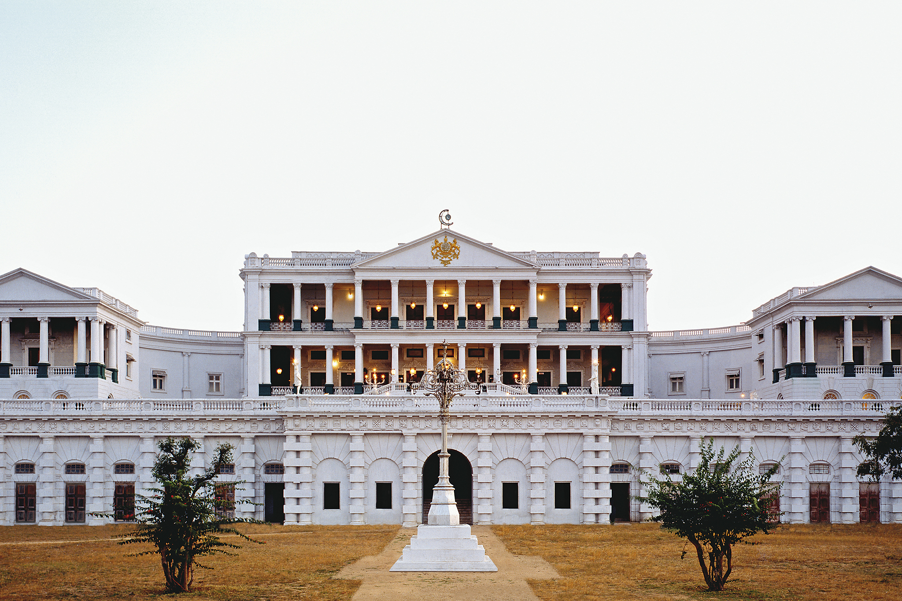
            
            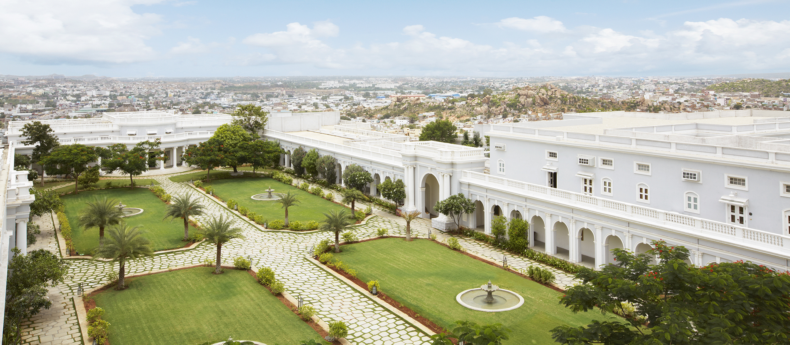
            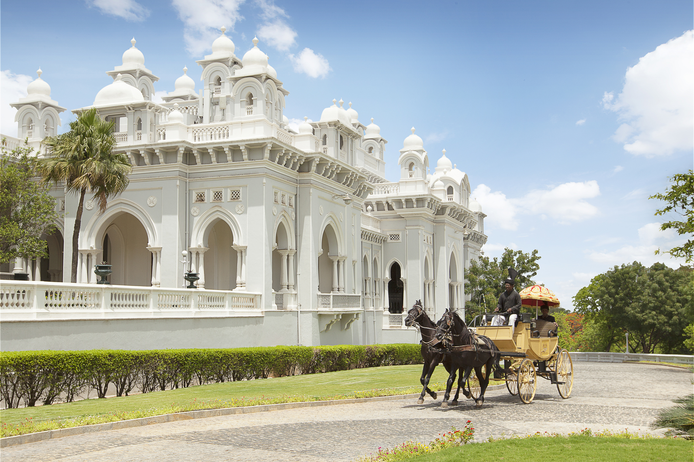
            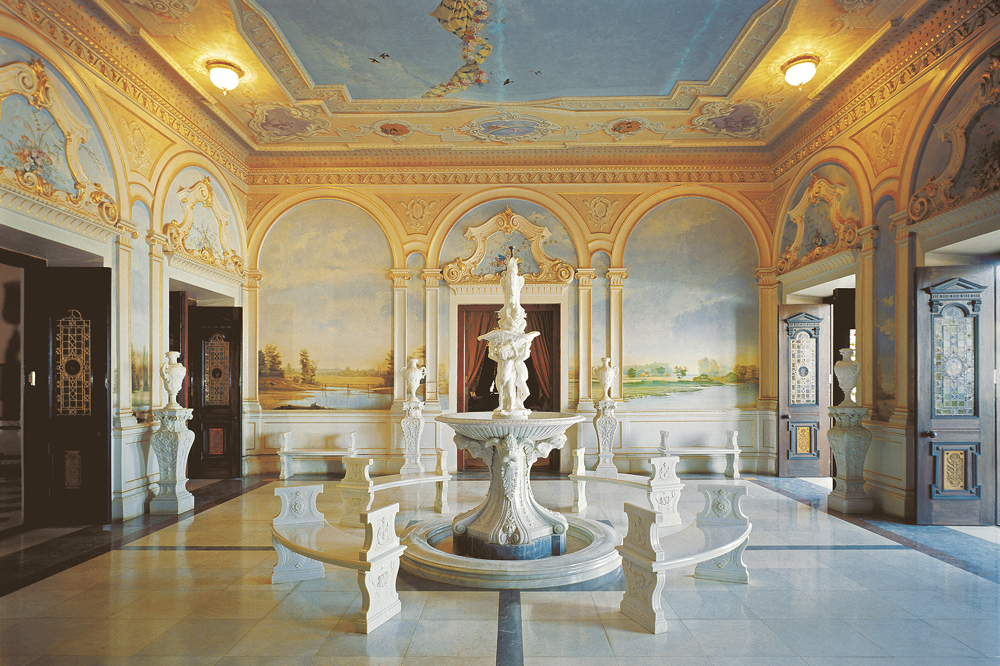
            
            
            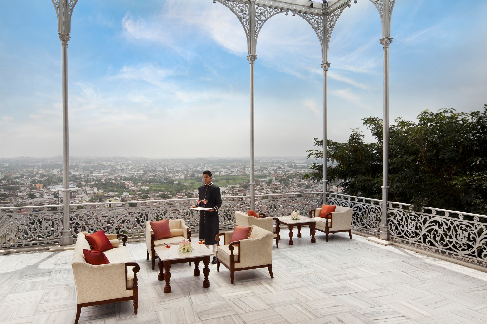
            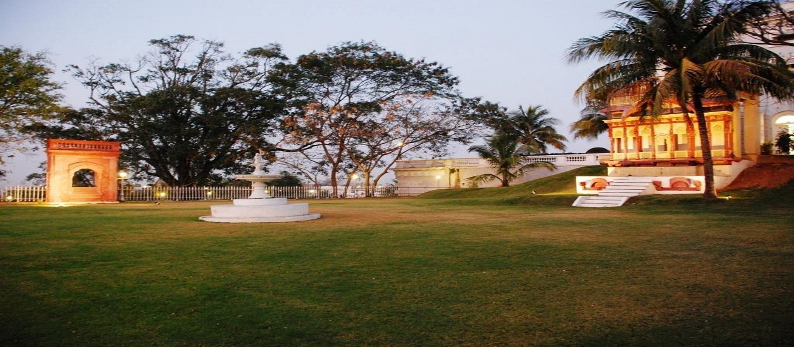
            
            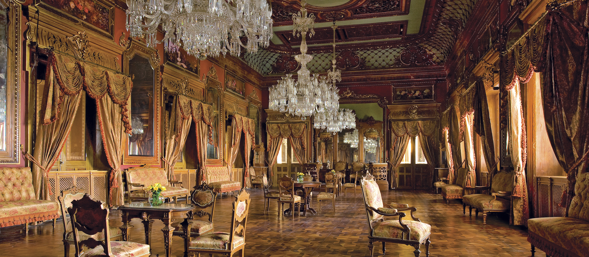
            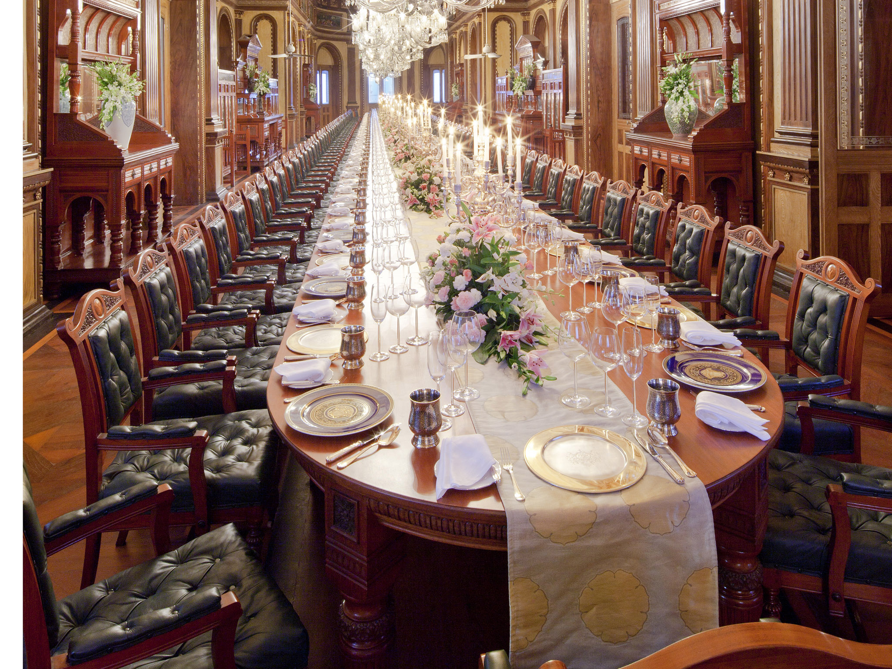
            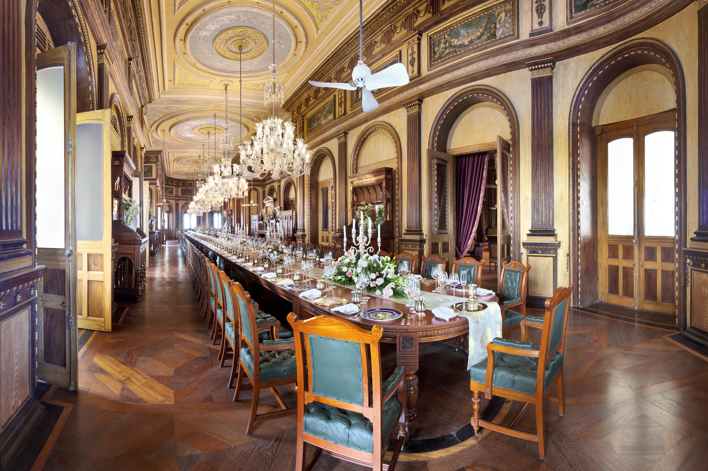
            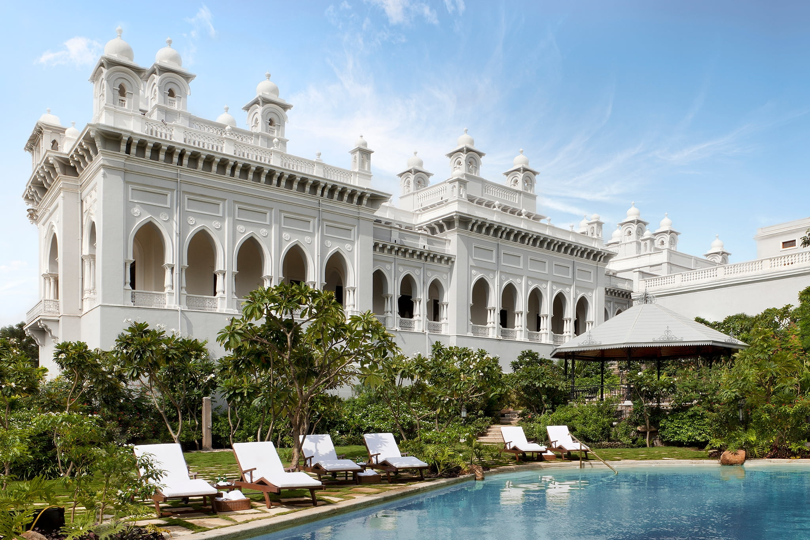
            
            
            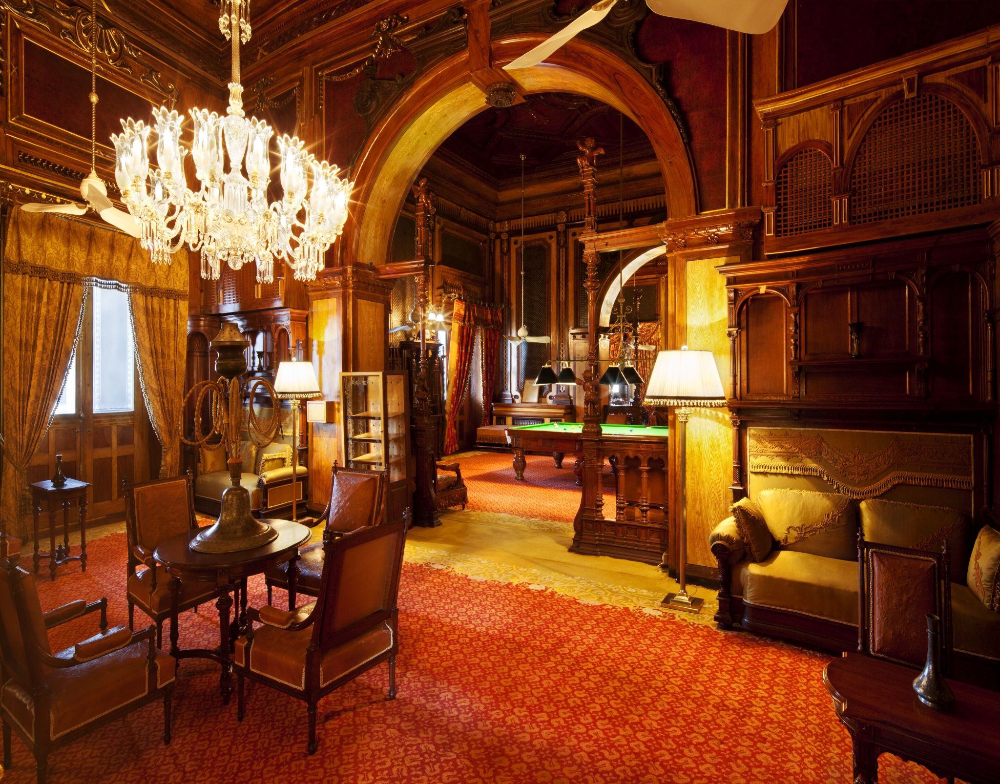
            
            
            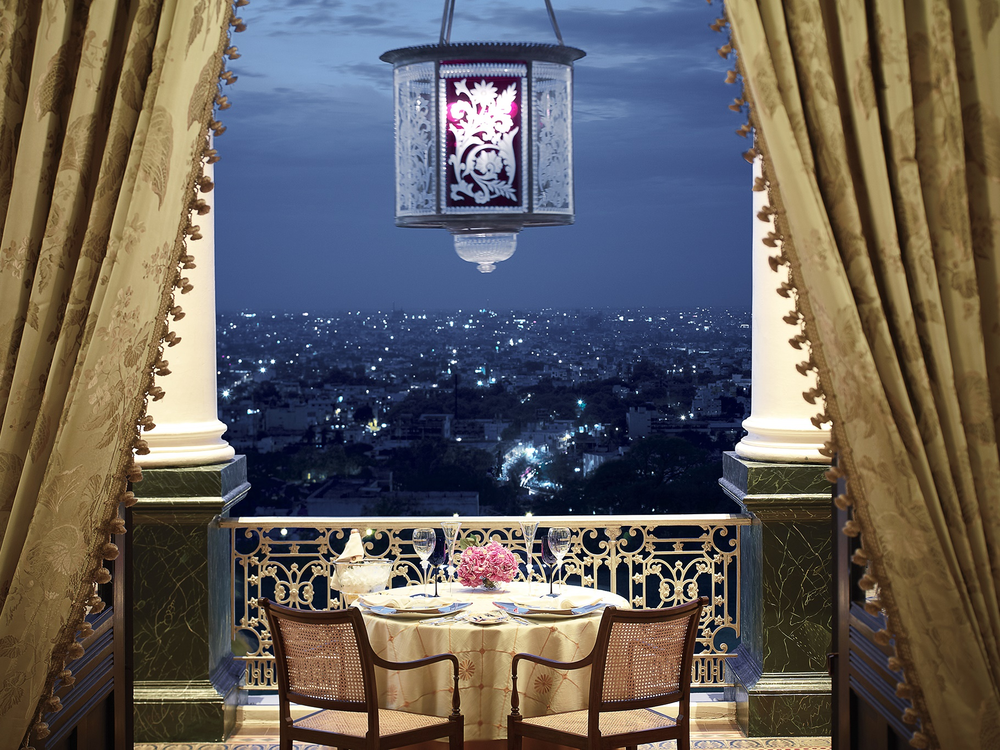			
            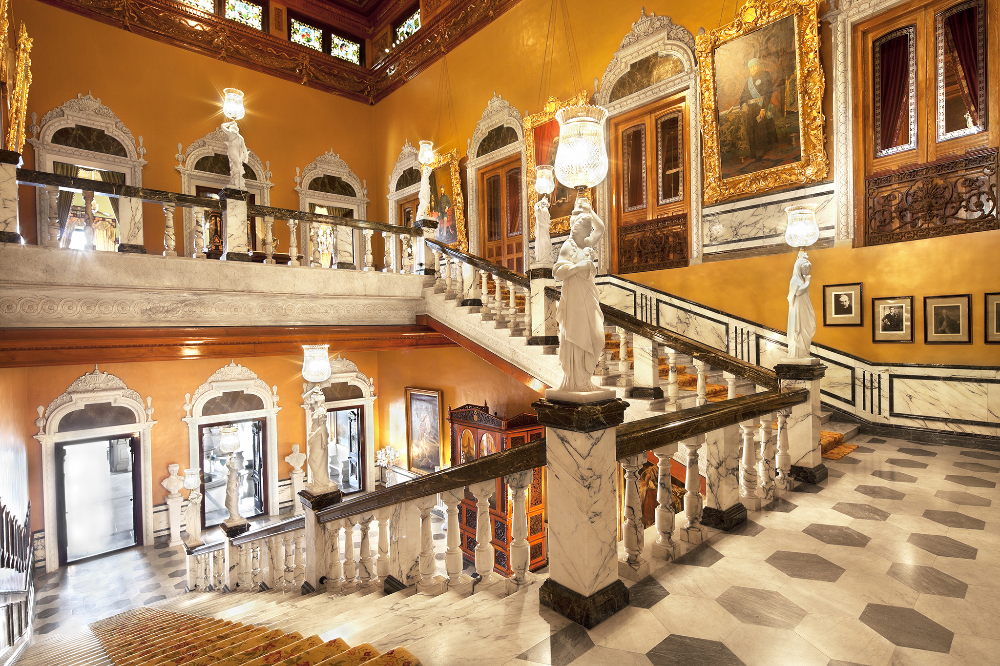
            
            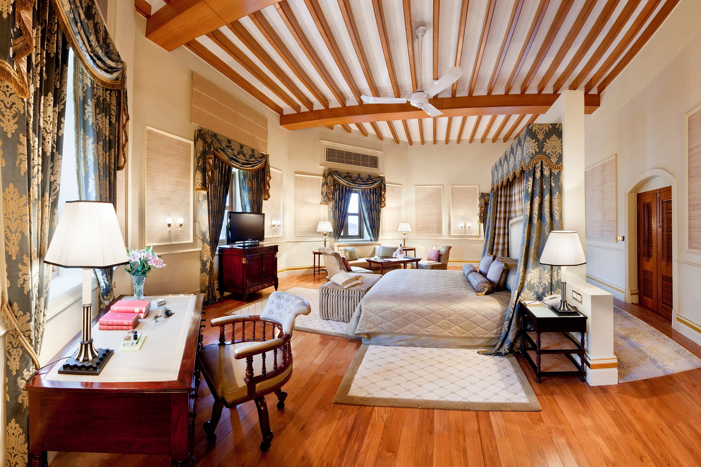			
            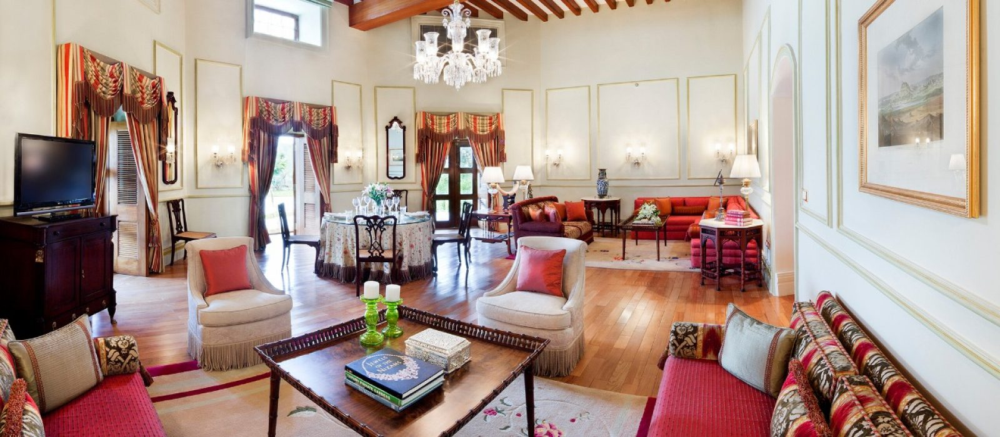
            
            			
            
            
            			
            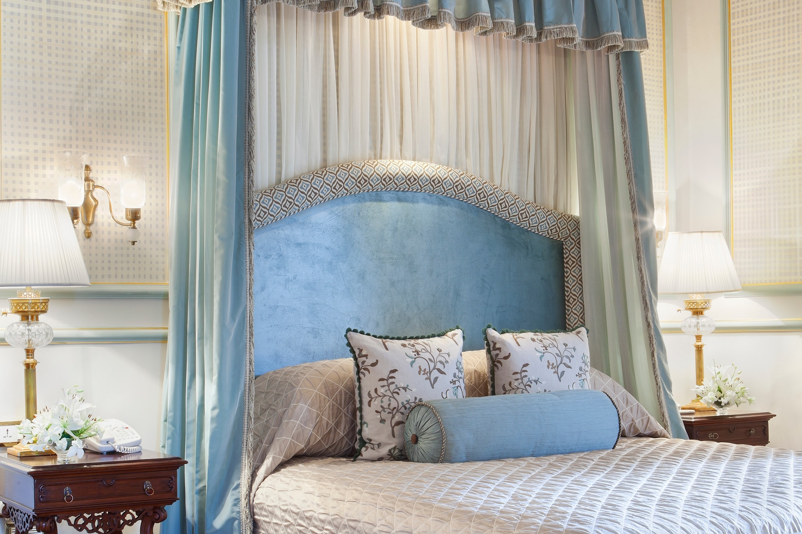			
		</div>
        <div class="col-md-4">
            <div class="project-info">
                <h2>Taj Falaknuma Palace</h2>

                <div class="details">
                    <!-- <div class="info-text">
                        <span class="title">Date</span>
                        <span class="val">March 2014</span>
                    </div> -->

                    <div class="info-text">
                        <span class="title">Location</span>
                        <span class="val">Hyderabad</span>
                    </div>

                    <div class="info-text">
                        <span class="title">Category</span>
                        <span class="val">Luxury Wedding</span>
                    </div>
                </div>

				Perched 2,000 feet above the city of Hyderabad is Taj Falaknuma Palace, a jewel amongst the clouds. Built in 1894, it is the former palace of the Nizam, rumoured to be the richest man in the world at one time. Overlooking the twinkling City of Pearls, this enchanting palace exudes romance and grandeur that take one back to when the Nizam ruled Hyderabad. 
				<br/><br/>
				From the moment you arrive at Taj Falaknuma Palace in a horse-drawn carriage, our palace butlers treat you like royalty. Walk the walk of kings through the Grand Staircase to retrace the steps of Nizams, European royalty, enchanting Begums and distinguished Heads of State. The five-star luxury hotel, spread over 32 acres, allows you to journey to the gilded ages, where opulence and excess is celebrated and savoured in equal measure. 
                <br><br>
                The 60 rooms and suites are beautifully refurbished and lovingly restored by Her Highness Princess Esra, the Nizam’s Turkish wife. Each provides marvellous views of the palace courtyard and the 400-year-old city of Hyderabad. Go on a sumptuous, gastronomic ride at our Indian fine-dining restaurant, Adaa, and savour multi-cuisine specialities at Celeste. Enjoy breakfast at Celeste & Gol Bungalow and and afternoon tea on the Jade Terrace or private dinners at South East Garden & Jade Terrace or a Unique dining experience at Gol Bungalow. The stunning Durbar Hall, Jade Room and massive 101-seater dining hall bedecked with Belgian chandeliers, and assorted gardens and terraces lend royal decadence to celebratory events and elegance to business meetings. Feel holistically rejuvenated at our Jiva Spa, rooted in the traditional Indian approach to wellness; complemented with a wellness menu that employs the finest principles of Ayurvedic cooking. The royal city of Hyderabad merges modern lifestyle with ancient heritage.
 
 </div>
        </div>
    </div>
</div>